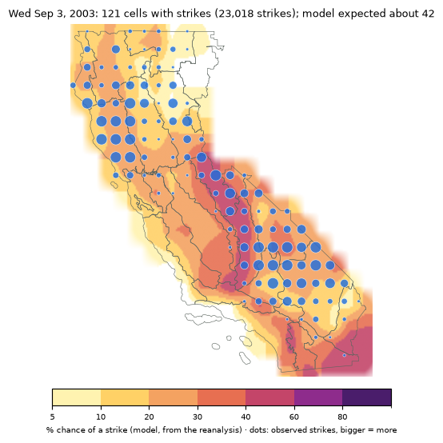
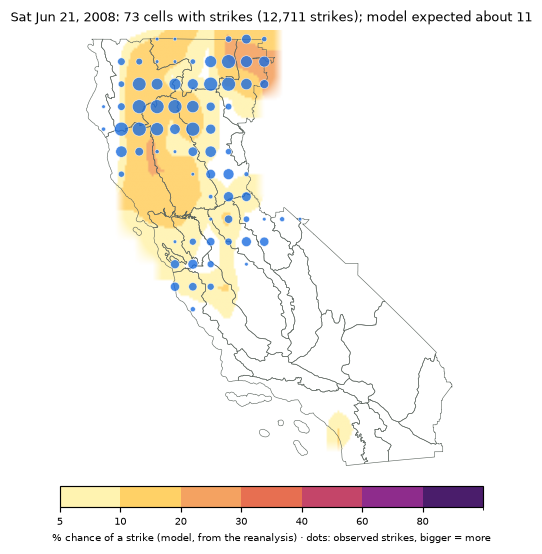
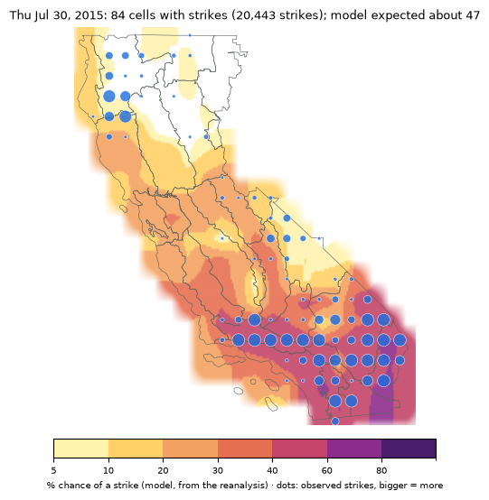
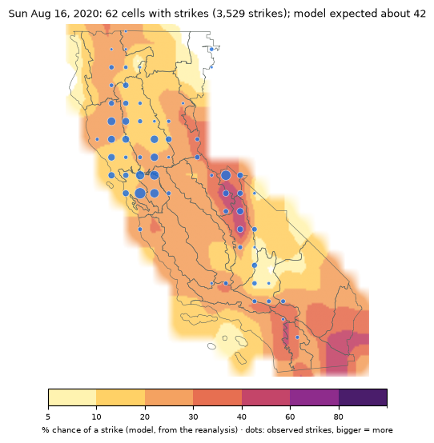
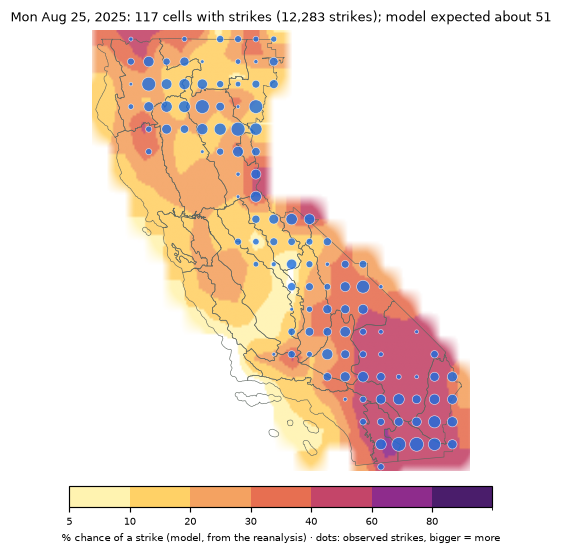
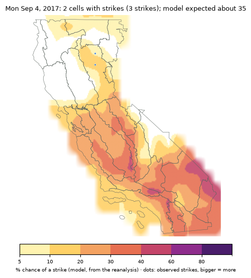
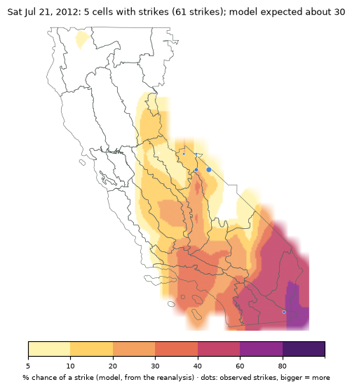
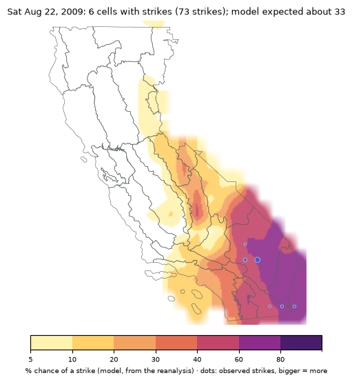
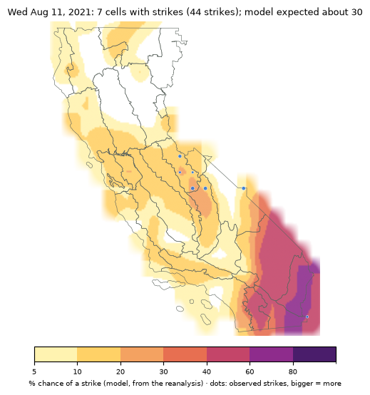

Lightning potential: how it's made and its assumptionsONCCOSCCMethod 1 · logistic / CAPE
The "Lightning potential" fields in the pattern map's field menu.
What it showsONCCOSCC
For each 0.5° cell (about 35 miles across) over California and each fire day (6 a.m. to 6 a.m. Pacific), the chance that at least
one cloud-to-ground lightning strike, or at least ten, lands in the cell. It's the average over the members of the two ensembles that
forecast atmospheric instability, ECMWF IFS ENS and NOAA GEFS. The AI models don't output CAPE, so picking one of them, or the
all-model mean, shows that two-model average. The colors are smoothed between cell centres for display; the forecast itself is per cell.
How it's madeONCCOSCC
It follows the method of Nikolov, Bothwell and Snook (2024), Probabilistic Forecasting of Lightning Strikes over the Continental
USA and Alaska (Fire 7:111), which fits logistic equations to decades of observed strikes and reanalysis weather, with each
area's lightning climatology built in. Their coefficients aren't published, so this is a re-fit on this project's data, not their model:
Strikes: Vaisala NLDN cloud-to-ground strikes, 2001–2025, counted per cell per fire day.
Weather: the ERA5 reanalysis at the same grid points and the models' two daily times (00 and 12 UTC, 5 p.m. and 5 a.m. PDT).
The equation's inputs, in order of weight:
the cell's lightning frequency for that month (2001–2020), the baseline;
instability, CAPE (the higher of the day's two values);
700 hPa (about 10,000 ft) dewpoint, moisture aloft for storms to build on;
2 m dewpoint, low-level moisture;
700 hPa temperature, and the 2 m minus 700 hPa temperature difference (how fast it cools with height) at 5 p.m.
Fitting: 2001–2020. Testing: 2021–2025, years the equation never saw.
How well it does (2021–2025)ONCCOSCC
0.92AUC, any strike (climatology alone 0.79)
0.93AUC, 10+ strikes (climatology alone 0.83)
+13%Brier skill over climatology, any strike
3.7%of cell-days had a strike
AUC 0.5 is no skill and 1 is perfect. Reliability, any strike (does a forecast of X% come true X% of the time?):
Forecast
Mean forecast
Observed
Cell-days
0.00-0.05
2%
1%
294,794
0.05-0.10
7%
8%
31,365
0.10-0.20
14%
18%
19,153
0.20-0.30
24%
33%
6,433
0.30-0.50
38%
44%
4,549
0.50-0.70
57%
50%
1,384
It runs a little low between 10% and 30%, so read 15–20% as "about one in five". Most cell-days sit near zero: lightning is rare
in any one cell on any one day.
Assumptions and limitsONCCOSCC
Trained on the reanalysis, run on forecasts. The equation learned from ERA5; the forecasts feed it model fields. Each model's
CAPE is defined a little differently (IFS: most-unstable parcel; GEFS: a near-surface layer) and runs higher or lower than ERA5's, which
shifts the probabilities. The project's run archive keeps each model's values so this can be measured and corrected.
Coarse instability. A 0.5° grid point stands for a 35-mile cell; the storms that make lightning are a few miles across.
The model can tell which areas and days are favorable, not which canyon gets hit.
California only. The strike record covers California's Predictive Service Areas, so cells elsewhere have no equation.
Fire days, not hours. Each value is for a whole 6 a.m.–6 a.m. day. Night-time elevated storms (like August 2020's)
count toward the day they start in.
Rare events run low. The climatology term pulls unusual events (early-season lightning) toward the usual, so a siege can
show as 10–20% rather than 50%. See the June 2008 example below.
No lifting term. CAPE and moisture say storms can grow; nothing in the equation says what sets them off. See the
false alarms and watch-outs below.
Dry or wet isn't in it. It forecasts strikes, not whether they come with rain. The "Thunderstorms and new lightning fires" rows
in the calibrated outlook combine the storm setup with fuels and the record of lightning-caused fires.
Licensed data. The strike history is Vaisala NLDN, used under license; only derived probabilities and maps are shown.
Past sieges, as the model sees themONCCOSCC
The equation run on the reanalysis for five of the biggest lightning days of 2001–2025. Dots are the cells that had strikes, bigger for
more. 2025 is a year the equation never saw. On every one of these days more cells were hit than the equation expected: on the big
outbreaks it gets the area right and undersells the size. June 2008 is the worst case. It was an early-season siege where lightning
almost never happens, so the equation's climatology term held it to 10–20% and not one cell reached 30%. Read the layer as
"where storms can happen" more than "which cells will be hit", and treat any organized 10–20% area in June as worth a look.
Fire day
Cells with strikes
Model expected
Cells ≥30%
CAPE
700 hPa temp
700 hPa dewpt
2 m dewpt
2 m − 700 hPa
Sep 3, 2003
121
42
48
810
11.0
3.5
12.4
20.7
Jun 21, 2008
73
11
0
–
–
–
–
–
Jul 30, 2015
84
47
67
940
11.0
5.4
16.1
20.5
Aug 16, 2020
62
42
31
435
16.6
2.9
13.3
18.2
Aug 25, 2025
117
51
68
513
9.2
3.4
12.5
20.2
Ingredients are medians over the day's cells at ≥30% (J/kg, °C). "Model expected" is the sum of the cell chances, the number of cells the equation expected to see a strike.





When it called for lightning and little cameONCCOSCC
The four fire days of 2001–2025 with the biggest gap: among the top 2% of days by expected strike area, the ones where a quarter
or less of that area was hit. All four are July–September monsoon days, with the highest chances over the southeastern deserts (and on September 4, 2017, the
southern Sierra and San Joaquin Valley too).
Fire day
Cells with strikes
Model expected
Cells ≥30%
CAPE
700 hPa temp
700 hPa dewpt
2 m dewpt
2 m − 700 hPa
Sep 4, 2017
2
35
43
563
13.0
2.0
15.4
23.3
Jul 21, 2012
5
30
42
538
12.0
5.7
13.2
22.1
Aug 22, 2009
6
33
46
1119
8.1
3.1
17.5
19.1
Aug 11, 2021
7
30
33
500
12.3
4.2
15.7
22.4
Ingredients are medians over the day's cells at ≥30% (J/kg, °C). "Model expected" is the sum of the cell chances, the number of cells the equation expected to see a strike.




Watch-outs: ingredients that can leave a high chance emptyONCCOSCC
Across every cell-day of 2001–2025 the equation put at 30% or more, about half had no strike. That's roughly what a 30–50%
forecast should do. Which ones stayed empty wasn't random, though:
Warm air near 10,000 ft (a cap). In the warmest quarter of these cell-days (700 hPa above about 12.7 °C) 65% stayed dry,
against 36% in the coolest quarter. On three of the four false alarms the 700 hPa temperature was 12–13 °C, against 9–11 °C on
most of the sieges. Warm air aloft is a lid that CAPE may not get through without strong lift. The exception is elevated storms: on August
16, 2020 it was 16.6 °C at 700 hPa and storms fired anyway, on moisture and lift arriving above that layer.
A very hot surface under a deep dry layer. The miss rate climbs from 34% to 73% from the smallest to the largest quarter of the
2 m − 700 hPa temperature difference (above about 25 °C). That's desert afternoons: high cloud bases, storms that form over the
mountains and drift or die before they reach the cell, or virga.
Moisture at the surface only. Three of the false alarms had 2 m dewpoints of 15.4–17.5 °C, against 12–13 °C on most of
the sieges, and were no wetter than the sieges at 700 hPa. That's a Gulf of California moisture surge into the low deserts. It puts big CAPE on paper for a
surface parcel (1,100 J/kg on August 22, 2009), but the moisture is shallow and capped. Look for moisture through the mid-levels, not
just at the surface.
No trigger. The equation has no lifting term: no shortwave trough, no upper-level divergence, no outflow from yesterday's
storms. CAPE is fuel, not ignition. Before trusting a high chance, look for something to set it off: an easterly wave or monsoon
impulse, a closed low or shortwave approaching, or difluent flow aloft.
Things the equation can't see. Inhibition (CIN) isn't an input, and neither is mid-level moisture above 700 hPa or the
steering flow. Heavy smoke can also shade the surface enough to keep afternoon storms from firing.
Early season. High chances in March and April came true least often (66% and 83% of cell-days at ≥30% stayed dry), and
June the most of the main months (26% dry).
CAPE alone is a poor guide. Among cell-days at ≥30%, the miss rate is about the same (48–55%) whatever the CAPE. The forecast
already counts CAPE; what decides the outcome is whether the air releases it.
ReferenceONCCOSCC
Nikolov, N., P. Bothwell and J. Snook, 2024: Probabilistic Forecasting of Lightning Strikes over
the Continental USA and Alaska: Model Development and Verification. Fire, 7, 111.
doi:10.3390/fire7040111 (open access, CC BY 4.0).